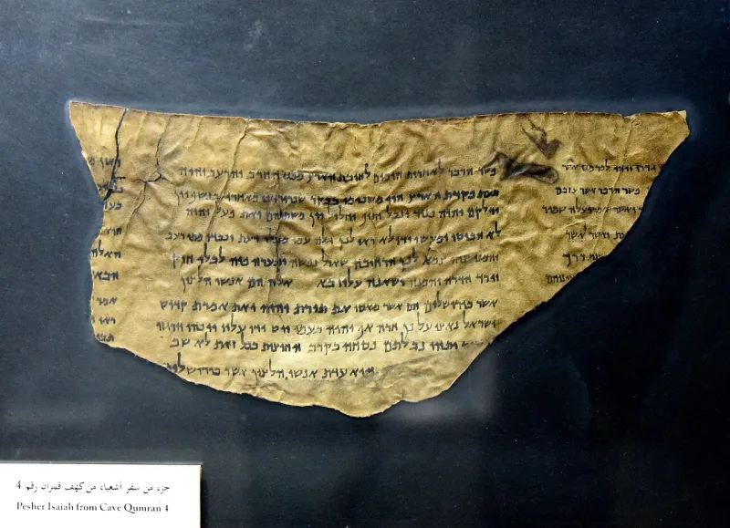
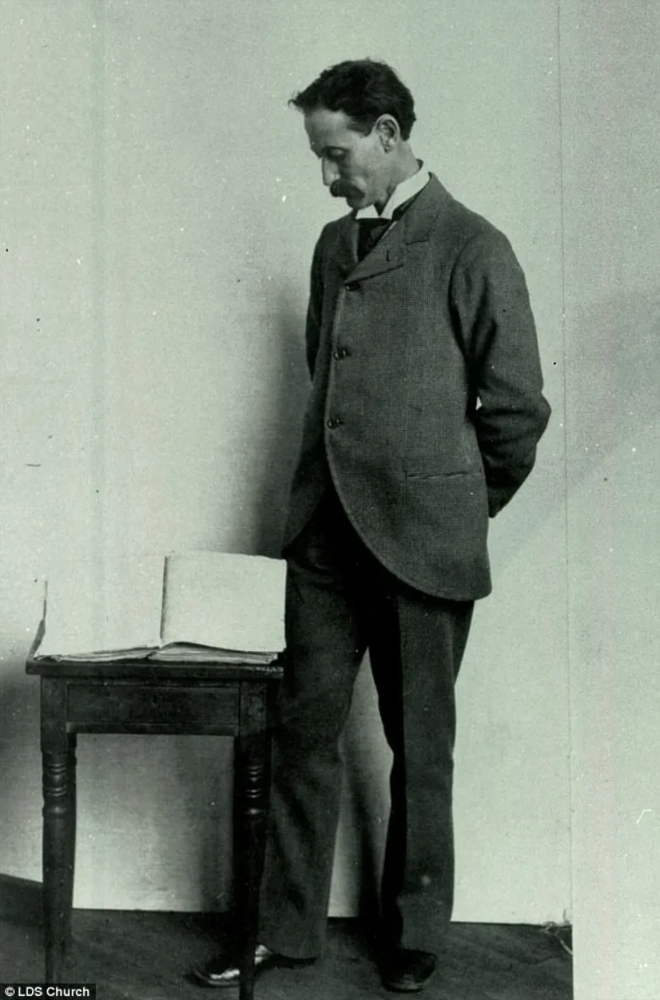

Alma 36's mirror pattern: evidence or coincidence
ContestedLDS scholars have a real answer here. Say so before your friend does.
The evidence
What chiasmus is
A shape in writing. Ideas run out and then back again in reverse — A, B, C, then C, B, A.
It turns on a centre. Old Hebrew writers used it, and so does the Bible; Genesis 9:6 and Amos 5:4-6 are examples.
The claim
In 1967 John Welch found extended chiasmus in the Book of Mormon, publishing on it in 1969. Alma 36 is the showpiece.
The whole chapter is laid out that way, turning on verses 17-18, where Alma remembers and cries out to "Jesus Christ, a son of God." Welch argues Joseph Smith could not have known the form.
The critical reply
Earl Wunderli published it in Dialogue in 2005. He says the outline depends on choosing.
Some repeated words are counted as structure; others that break the pattern are not. Chunks of text are skipped.
Loose matches are allowed. By Welch's own fifteen criteria, the chapter scores poorly.
Chiasm-like shapes also turn up in the Doctrine and Covenants, and in ordinary writing of the 1800s.
Their answer, at full strength
Two physicists, Boyd and Farrell Edwards, replied with statistics. They estimate it is very unlikely that Alma 36's repeated elements would fall into that order by chance.
Their method, they argue, does not rest on anyone's literary judgement. Apologists add that the shape fits the meaning, with conversion at the centre of an inverted life.
They say the candidates in the D&C are weaker. And no evidence puts John Jebb's 1820 book on chiasmus, or any such work, in Joseph Smith's hands.
How strong is this argument?
Genuinely arguable, and this is a real scholarly exchange in peer-reviewed journals. Concede the pattern; contest what follows from it.
Even a deliberate chiasm does not prove antiquity. A writer soaked in King James parallelism could produce one, and modern texts contain them.
Grant it gracefully and go back to the anachronisms and the DNA.
What to say
"I'll grant you the chiasm. Does a shape on the page make a book ancient?"



How they answer this — at its strongest
Two physicists ran the numbers. Alma 36's order is very unlikely by chance.
Boyd and Farrell Edwards are physicists. They published a study of the odds. They estimate it is very unlikely that Alma 36's repeated elements would fall into that mirror order by chance. Their method, they argue, does not rest on Welch's or Wunderli's literary judgements.
Apologists add that the shape fits the meaning. Conversion sits at the centre of a life told backwards.
They argue that the candidates in the Doctrine and Covenants are plainly weaker.
And they note that nothing puts John Jebb's Sacred Literature of 1820, or any work on chiasmus, in Joseph Smith's hands in rural New York before 1829.
The verdict
Concede the pattern and contest what follows: a shape does not make a book old.
This is a real two-sided exchange in peer-reviewed journals. Wunderli's point about picking and choosing lands. But the Edwardses' reply on the odds is a serious counter, and it survives his rebuttal in part.
Calling it contested, rather than dismissing it, is both true and good for your credibility.
The deeper point is this. Even grant a deliberate chiasm in Alma 36. The step to antiquity still fails. A writer soaked in King James parallels could produce a mirror shape, and modern texts have them.
A shape on the page cannot outweigh the anachronisms, the DNA and the textual evidence. Concede the pattern. Contest what follows.
Sources
- Earl Wunderli, 'Critique of Alma 36 as an Extended Chiasm' (Dialogue 38:4)
- Boyd & Farrell Edwards, Response to Wunderli (Dialogue)
- Wunderli, Response to the Edwardses (Dialogue)
- Scholarly Publishing Collective: Critique of Alma 36 as an Extended Chiasm